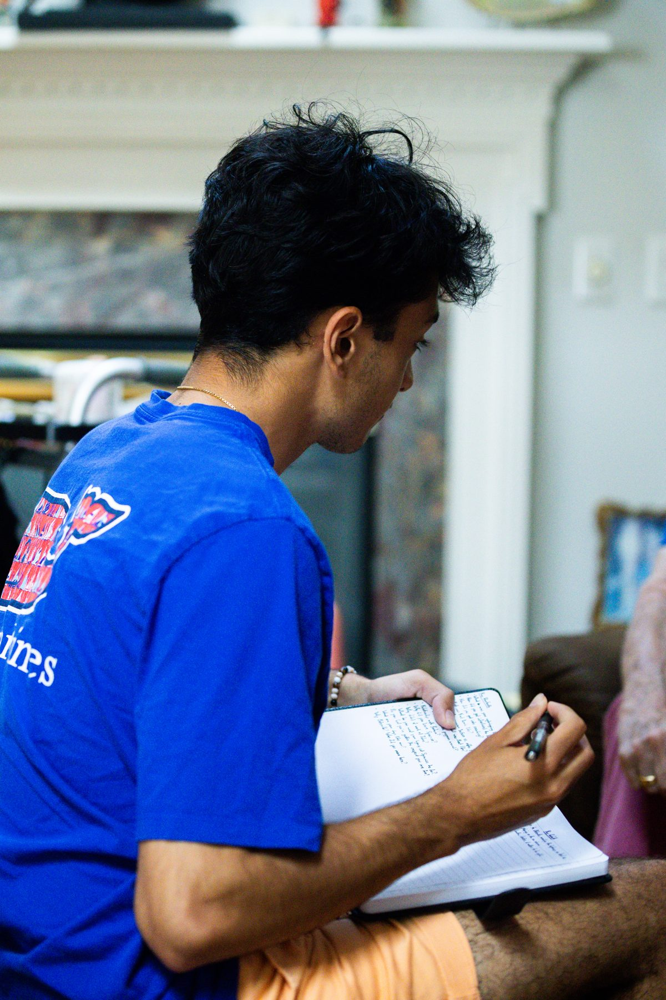

Mauricio Palmar
A sportswriter looking for the humans behind the athletes.
Hello! My name is Mauricio Palmar, and I'm a Magazine Journalism student at Syracuse University. Growing up in Annapolis, Maryland, I developed a passion for sports journalism as an intern at the Severna Park Voice. In my time with The Daily Orange, the Chatham Anglers and USA Lacrosse Magazine, I've grown to love using sports as a vessel to tell features that touch on universal themes of humanity.
